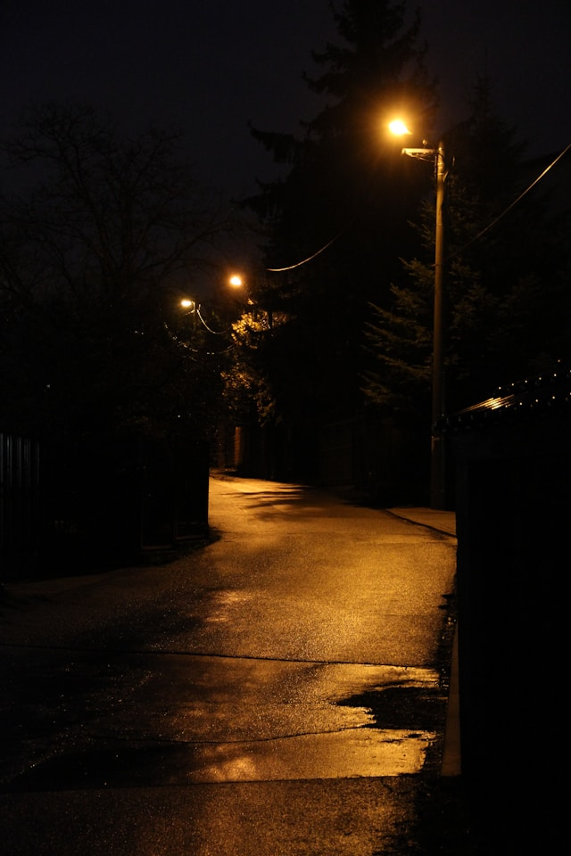

Nachmittags war der Schulhof fast leer. Nur ein paar Blätter lagen auf dem Boden und wurden vom Wind hin und her geschoben. Neben der Turnhalle stand ein Mädchen und wartete. Sie schaute immer wieder auf die Uhr, obwohl sie wusste, dass es nichts änderte.
Der Schultag war lang gewesen. Mathe, Deutsch, Geschichte – alles wirkte gleich und irgendwie anstrengend. In der letzten Stunde hatte niemand richtig zugehört. Manche kritzelten in ihre Hefte, andere starrten aus dem Fenster.
Der Bus kam schließlich, langsamer als sonst. Das Mädchen stieg ein und setzte sich ans Fenster. Draußen zogen Häuser, Straßen und Menschen vorbei. Sie dachte nicht an etwas Bestimmtes, eher an vieles gleichzeitig.
Zu Hause stellte sie ihre Tasche ab und zog die Jacke aus. In ihrem Zimmer war es ruhig. Sie setzte sich an den Schreibtisch, öffnete ihr Heft und schlug es kurz darauf wieder zu. Heute fühlte sich nichts dringend an.
Als es draußen dunkler wurde, ging sie zum Fenster. Die Straßenlaternen gingen an, eine nach der anderen. Der Tag war vorbei, ohne besonders zu sein – aber auch ohne schlecht zu sein. Und manchmal reichte genau das.
